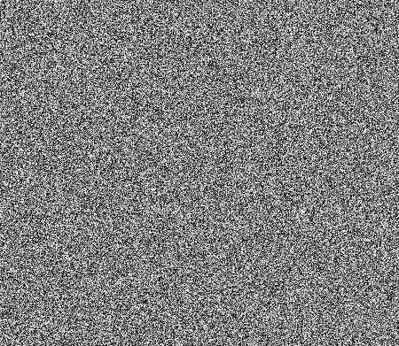

Tiny Dream is a header only, dependency free*, partially uncensored, Stable Diffusion implementation** written in C++ with primary focus on CPU efficiency, and smaller memory footprint. Tiny Dream runs reasonably fast on the average consumer hardware, require only 1.7 ~ 5.5 GB of RAM to execute, does not enforce
Nvidia GPUs presence, and is designed to be embedded on larger codebases (host programs) with an easy to use C++ API. The possibilities are literally endless, or at least extend to the boundaries of Stable Diffusion's latent manifold.
* Exception for the backend tensor library of course which is ncnn as of this release, with planned transition to ggml. Refer to the Roadmap section for additional information.
** Stable Diffusion 1.x using the CLIP transformer for token embedding, 512*512 pixels output that can be upscaled to 2048x2048 high resolution output.
Principle of Diffusion models. The prompt used to generate such image using the Tiny Dream C++ API is:
"pyramid, desert, palm trees, river, sun, (landscape), (high quality)"

, (high quality)")

Illustration courtesy of Binxu Wang , Ph.D candidate, Harvard University.
Stable Diffusion , a powerful, open-source text-to-image generation model launched publicly by Stability.ai in August, 2022, and is designed to produce images matching input text prompt. Stable Diffusion rely on
the latent diffusion model architecture, a variant of the diffusion model which maps to the latent space using a fixed Markov chain . The goal of diffusion models is to learn the latent structure of a dataset by modeling the way
in which data points diffuse through the latent space . They are designed to learn the underlying structure of a dataset by mapping it to a lower-dimensional latent space. This latent space represents the data in which the relationships between different data points are more easily understood and analyzed.
PixLab | Symisc Systems Open Source, ML/DL related projects namely:
Tiny Dream, ASCII Art & SOD
Getting Started
Integrating Tiny Dream on your existing code base is straightforward. Here is what to do without having to do a lot of tedious reading and configuration:
1. Download The Tiny-Dream Source Code
-
Download the latest public release of Tiny Dream, and extract the package on a directory of your choice. Usually, extraction occur on the source tree of your existing codebase for example.
-
Refer to the download section below to get a copy of the Tiny Dream source code as well as the Pre-Trained Models & Assets.
2. Embedding Tiny-Dream
-
The Tiny Dream source code comprise only two header files that is
tinydream.hpp and stb_image_write.h.
- All you have to do is drop these two C/C++ header files on your source tree, and instantiate a new
tinyDream object as shown on the pseudo C++ code below:
1
2
3
4
5
6
7
8
9
10
11
12
13
14
15
16
17
18
19
20
21
22
23
24
25
26
27
28
29
30
31
32
33
34
35
36
37
38
39
40
41
42
43
44
45
46
47
48
49
50
51
52
53
54
55
56
57
58
|
#include "tinydream.hpp"
int main(int argc, char *argv[])
{
tinyDream td; // stack allocated tinyDream object
// Display the library current inference engine, version number, and copyright notice
std::cout << tinyDream::about() << std::endl;
// At least a positive prompt must be supplied via command line
if (argc < 2) {
std::cout << "Example of Prompts:" << std::endl;
// Example of built-in Positive/Negative Prompts
auto prompts = tinyDream::promptExample();
std::cout << "\tPositive Prompt: " << prompts.first << std::endl;
std::cout << "\tNegative Prompt: " << prompts.second << std::endl;
return -1;
}
// Register a log handler callback responsible of
// consuming log messages generated during inference.
td.setLogCallback(logCallback, nullptr);
// Optionally, set the assets path if the pre-trained models
// are not extracted on the same directory as your executable
td.setAssetsPath("/path/to/tinydream/assets"); // Remove or comment this if your assets are located on the same directory as your executable
// Optionally, set a prefix of your choice to each freshly generated image name
td.setImageOutputPrefix("tinydream-");
// Optionally, set the directory where you want
// the generated images to be stored
td.setImageOutputPath("/home/photos/");
/*
* Finally, run Stable Diffusion in inference
*
* The supplied log consumer callback registered previously should shortly receive
* all generated log messages (including errors if any) during inference.
*
* Refer to the official documentation at: https://pixlab.io/tiny-dream#tiny-dream-method
* for the expected parameters the tinyDream::dream() method takes.
*/
for (int seed = 1; seed < seedMax; seed++) {
std::string outputImagePath;
td.dream(
positivePrompt,
negativePrompt,
outputImagePath,
true, /* Set to false if you want 512x512 pixels output instead of 2048x2048 output */
seed,
step
);
std::cout << "Output Image location: " << outputImagePath << std::endl; // uncomment this if too intrusive
}
return 0;
}
|
üëè You have successfully integrated Tiny Dream. To build & generate an executable for the boilerplate application , refer to the next section...
-
Building Tiny-Dream from source require a modern C++17 compiler such as GCC 7 or later, Clang or Microsoft Visual Studio (MSVC).
- You also need to link to the default backend Tensor library in order to generate the executable.
-
As of this release, NCNN is the default tensor library. On our Roadmap, we plan to ditch
ncnn to a less bloated tensor library such as SOD or
GGML with focus on CPU efficiency.
- An example of generating a heavy optimized executable without relying on a external build manager is shown just below:
git clone https://github.com/symisc/tiny-dream.git
cd tiny-dream
g++ -o tinydream boileplate.cpp -funsafe-math-optimizations -Ofast -flto=auto -funroll-all-loops -pipe -march=native -std=c++17 -Wall -Wextra `pkg-config --cflags --libs ncnn` -lstdc++ -pthread -Wl -flto -fopt-info-vec-optimized
./tinydream "pyramid, desert, palm trees, river, (landscape), (high quality)"
|
- Just reproduce the steps above on your terminal to generate a heavy optimized build for your target platform.
-
Alternatively, you can rely on a build manager such as CMAKE to build the executable for you. The Tiny-Dream repository repository already contain the necessarily CMAKE template to build the executable from source.
4. Get the Pre-Trained Models & Assets
-
Once your executable built,
you will need the Tiny Dream pre-trained models & assets path accessible to your executable.
-
The Tiny Dream assets comprise all pre-trained models (over 2GB as of this release) required by the tinyDream::dream() method in order to run stable diffusion in inference (image generation).
-
You can download the pre-trained models from the Download section below.
-
Once downloaded, extract the assets ZIP archive in a directory of your choice (usually the directory where your executable is located), and set the full path via tinyDream::setAssetsPath() or from the Tiny Dream constructor.
5. C++ Usage Example
The C++ gist below highlights a typical integration usage of Tiny Dream on an existing C++ code base:
- The above code should be self-explanatory, and easy to understand for the average C++ programmer. A new
tinyDream object is allocated on the stack, and initialized on line 83 of the gist above.
- Library inference engine, version number & copyright notice, are shown on line 86 of the gist via call to the tinyDream::about() static method.
- At least, one argument is required that is the Positive Prompt which consists of words separated by commas that describe something you'd like to see generated. If no arguments were provided, an example of Positive & Negative Prompts are shown on line 93 via call to the tinyDream::promptExample() static method, and the program exits immediately.
- Optionally, a log consumer callback is registered on line 101 via call to the tinyDream::setLogCallback() method. Inference is a heavy process, and may take some time to execute depending on the available resources so it make sense to log everything to the terminal or a text file during execution for a better user experience or to get an insight of what went wrong during the entire process.
-
Pre-trained models path is set on line 106 via call to the tinyDream::setAssetsPath() method. The Tiny Dream assets comprise all pre-trained models (over 2GB as of this release) required by the tinyDream::dream() method in order to run stable diffusion in inference (image generation).
You can download the pre-trained assets from the Download section below. You can also set the path directly from the constructor without calling this method.
-
Please note that if your Tiny Dream assets are located on the same directory where your executable reside, there is no need then to specify any path, the constructor default argument handle this specific case for you.
- Seed & Steps extra parameters are collected if available which controls respectively the resolution, and the accuracy (input text criteria) of the image generation process.
-
Finally, Stable Diffusion inference took place on line 158 of the gist above via single call to the tinyDream::dream()method. On successful execution, the generated image path is copied to the outputImagePath parameter, and the supplied log callback should report any errors if any during the entire process.
6. Continue with The C++ API Reference Guide
The Tiny Dream C++ Interface, provides detailed specifications for all of the various methods the Tiny Dream class exports. Once the reader understands the basic principles of operation for Tiny Dream, that section should serve as a reference guide.
C++ API Reference
This section define the C++ language interface to Tiny Dream. For a tutorial introduction, please refer to the Getting Started section above. As of this release, the library expose a single class with just eight methods, making it easy to use & integrate in your existing C++ projects. The exposed methods are documented below.
tinyDream Public Methods:
Syntax
tinyDream::tinyDream(const std::string& assetsPath = "./assets/");
Description
Constructor for the tinyDream class.
-
Instantiate a new
tinyDream object ready for Stable Diffusion Inference. The constructor takes an optional argument assetsPath which specifies the path to the pre-trained models required by the
tinyDream::dream()
method in order to accept prompts and generate images that matches the input criteria.
-
Once the object instantiated, you can start registering log callback, assets path location, image storage directory, name prefixes, etc. and finally calls
tinyDream::dream()
for inference.
-
You can download the pre-trained assets from the Download section above. Once downloaded, extract the assets ZIP archive in a directory of your choice (usually the directory where your executable is located), and optionally set the path via the constructor or tinyDream::setAssetsPath().
Parameters
const std::string& assetsPath
Optional Argument: Full path to the pre-trained models location which can be downloaded from here. If this parameter is omitted, then the current path where the executable is located is assumed (recommended case).
Return Value
None
Syntax
void tinyDream::setLogCallback(std::function<void(const char* /* zLogMsg */, int /*msg length*/, void* /* pCookie */) xLogHandler, void* pUserData);
Description
Consume log messages via an external log handler callback. The main task of the supplied callback is to consume log messages generated during Stable Diffusion inference. Inference may take some time to execute depending on the available resources so it make sense to log everything to the terminal or text file for example.
Parameters
std::function<> xLogHandler
Log consumer callback. The supplied callback must have the following signature:
void(const char *zLogMsg,int msgLen void *pUserData)
The supplied callback must accept three arguments:
- The first argument is a pointer to a null terminated string holding the generated log message.
- The second argument is the size in bytes of the generated log message.
-
The last argument is the pUserData opaque pointer forwarded verbatim to your callback whenever a log message is generated.
Please note that depending on the load & inference parameters, the log consumer callback may be called dozens if not hundred of times, so make sure your supplied callback runs without blocking, and as fast as possible to avoid wasting CPU cycles.
void *pUserData
Optional Argument: Full path to the pre-trained models location which can be downloaded from here. If this parameter is omitted, then the current path where the executable is located is assumed (recommended case).
Return Value
None
Syntax
void tinyDream::setAssetsPath(const std::string& assetsPath);
Description
Set the pre-trained models path. The Tiny Dream assets comprise all pre-trained models (over 2GB as of this release) required by the tinyDream::dream() method for stable diffusion inference (image generation).
You can download the pre-trained assets from the Download section above. Once downloaded, extract the assets ZIP archive in a directory of your choice (usually the directory where your executable is located), and set the full path via this method or from the Tiny Dream constructor. You do not need to call this method if the assets are located on
the same directory where your executable reside.
Parameters
const std::string& assetsPath
Full or relative path to the pre-trained models location which can be downloaded from here.
Return Value
None
Syntax
void tinyDream::setImageOutputPath(const std::string& outputPath = "./");
Description
Set a directory of your choice where you want your output images to be stored. The default path is set to the current directory where the executable reside.
Parameters
const std::string& outputPath
Full or relative path to the desired location where you want the generated images to be stored.
Return Value
None
Syntax
void tinyDream::setImageOutputPrefix(const std::string& outputImgPrefix = "tinydream-");
Description
Set a prefix of your choice to the yet to be generated image names. Output image names must be unique during each inference step. The assigned prefix alongside a random string plus the current step, and seed generation will be used to generate this unique name that will reside on the directory of your choice.
Parameters
const std::string& outputImgPrefix
Prefix to assign to each future image to be generated. The default prefix is set to tinydream-.
Return Value
None
Syntax
bool tinyDream::dream(const std::string& positivePrompt, const std::string& negativePrompt,
std::string& outputImgPath, bool upScale = true, int step = 30, int seed = 42);
Description
Stable diffusion inference - Generate high definition output images that matches the input criteria.
Prompts (Positive or Negative) in this implementation are keywords separated by commas where each word describe the thing you'd like to see (or not) generated.
Prior to calling this method, Pre-trained Models & Assets must be accessible to your executable. You can download the Pre-trained models from the Download section above. Once downloaded, extract the assets ZIP archive in a directory of your choice (usually the directory where your executable is located), and optionally set the full path (if located outside the current executable directory) via
tinyDream::setAssetsPath() or from the Tiny Dream constructor.
Depending on the step, and seed parameters, it make sense to call this method more than once (ie dozen times) to achieve the desired result. On which case, we recommend that you install a log consumer callback via tinyDream::setLogCallback() to capture log messages generated during inference, and get a detailed overview of
what's going on under the hood.
Stable Diffusion is based on the Latent Diffusion architecture, introduced in the High-Resolution Image Synthesis with Latent Diffusion Models paper. There are three main building blocks in Stable Diffusion:
- Text Encoder: The text-encoder is responsible for converting the input prompt into an embedding space (latent vector).
- Diffusion Model & Image Encoder: Diffusion models are trained to denoise random Gaussian noise (64x64 latent image patch) step by step, to get to a sample of interest.
- Image Decoder: Finally, the decoder is responsible for converting the latent patches into 512x512 pixels output.
Parameters
const std::string& positivePrompt
Describe something you'd like to see generated using words separated by commas. High priority or meta instructions (eg image quality) must be surrounded by parenthesis.
Example: the following prompts will generate a high quality, landscape picture of a pyramid surrounded by palm trees and a river in the middle of the desert:
"pyramid, desert, palm trees, river, sun, (landscape), (high quality)".
const std::string& negativePrompt
Optional String, defaults to the empty string: An extra set of keywords that allows you to list what you do not want to see generated. Example of such keywords are:
"blood, mutilation, gore, genitals, nudity, destruction".
std::string& outputImgPath
On successful inference, the path to the generated image location will be copied to the supplied string object.
bool upScale
Optional Boolean, defaults to true. When true, the inference output is a high resolution, 2048x2048 image instead of the standard, medium resolution 512x512 Stable Diffusion output (when this field is set to false). This extra step is compute intensive, takes few seconds to complete, and is powered by Real-ESRGAN , a Super Resolution Network Upscaler.
int seed
Optional integer, defaults to 42. Seed in Stable Diffusion is a number used to initialize the generation. Controlling the seed can help you generate reproducible images, experiment with other parameters, or prompt variations.
int step
Optional integer, defaults to 30. An integer for adjusting the inference steps in Stable Diffusion. The more steps you use, the better quality you'll achieve but you shouldn't set steps as high as possible. Around 30 sampling steps (default value) are usually enough to achieve high-quality images. Using more may produce a slightly different picture, but not necessarily better quality. In addition, the iterative nature of the process makes generation slow; the more steps you'll
use, the more time it will take to generate an image. In most cases, it's not worth the additional wait time.
Return Value
Boolean true is returned on successful inference, false is returned otherwise. On which case, log messages captured by your log consumer callback should give you an insight of what went wrong during the whole image generation process.
Syntax
static std::pair<std::string /*Positive Prompt */, std::string /* Negative Prompt*/> tinyDream::promptExample();
Description
Return a hard-coded, prompt example template to be passed to the tinyDream::dream() method. This static method is of no particular interest except to familiarize the developer (in lack of imagination) with the library prompt inputs.
Parameters
None
Return Value
This static method never fail, and always return a standard template std::pair object holding the positive prompt in the first field of the std::pair, while the negative prompt is stored in the
second field of the pair object.
Syntax
static const char * tinyDream::about();
Description
Return the current tensor engine, copyright notice, library identification and version number.
Parameters
None
Return Value
This static method never fail, and always return a pointer to a null terminated string holding the copyright notice, and the current inference engine.